The PIC Fan
1 Using a potentiometer
Learn It
- A potentiometer is a component we can use in our circuits as potential divider.
- Before you learn about the potentiometer, you need to learn what is meant by a potential divider.
Try It
- Open Circuit Wizard and create the circuit shown below.
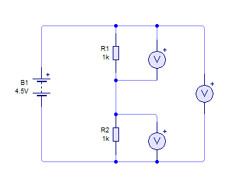
- Now press play and the three voltmeters should show potential difference across each of the resistors and across the pair of them.
- Because both resistors have the same value, the potential difference supplies by the battery is equally divided across each resistor.
- Now let's change the value of one of the resistors.
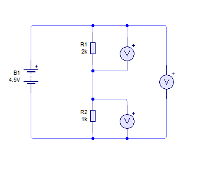
- Press play again, and see how the potential differences have changed.
Badge It - Silver
- Copy and complete the following table.
| Top Resistor Value | Bottom Resistor Value | Top Resistor PD | Bottom Resistor PD |
| 2k | 1k | 3V | 1.5V |
| 0.5k | 4k | ||
| 800 | 100 | ||
| 20k | 160k |
- Can you see a pattern between resistor values and potential difference?
Learn It
- If we know the resistor values and the total potential difference provided by the battery, it is easy to work out what the potential differences across each resistor will be.
- If we want to find Vtop then we can just do the following
Try It
- Why is this important?
- By changing resistor values we can influence the Potential Difference at an analogue input of a GENIE chip.
- Set up the circuit as shown below, and then create the corresponding flowchart. (Make sure you use a
GENIE C08)
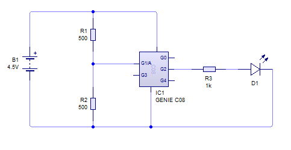 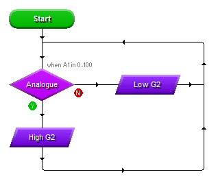
- Simulate the circuit and then choose
View the analogue sensor readingsfrom the menu on the right.
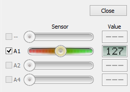
- The flowchart is setup so that the LED will turn on when the GENIE analogue sensor detects a value of 100.
- Now change the value of one of the resistors. Keep tweaking it until the LED comes on.
Badge It - Gold
- Look at the following flowchart.
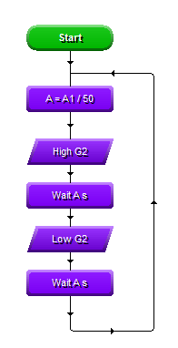
- What do you think the effect of changing the resistor values will be? Try out the flowchart if you can't figure it out. (You can create the
A=A1/50using theExprblock) - In your own words describe what the program does.
Learn It
- It would be inconvenient to have to swap in and out resistors to alter the potential difference reaching our GENIE chip. This is where a potentiometer comes in handy.
- Imagine you had a length of resistive wire - as shown below.

- We can consider this wire to be the equivalent of a single resistor.
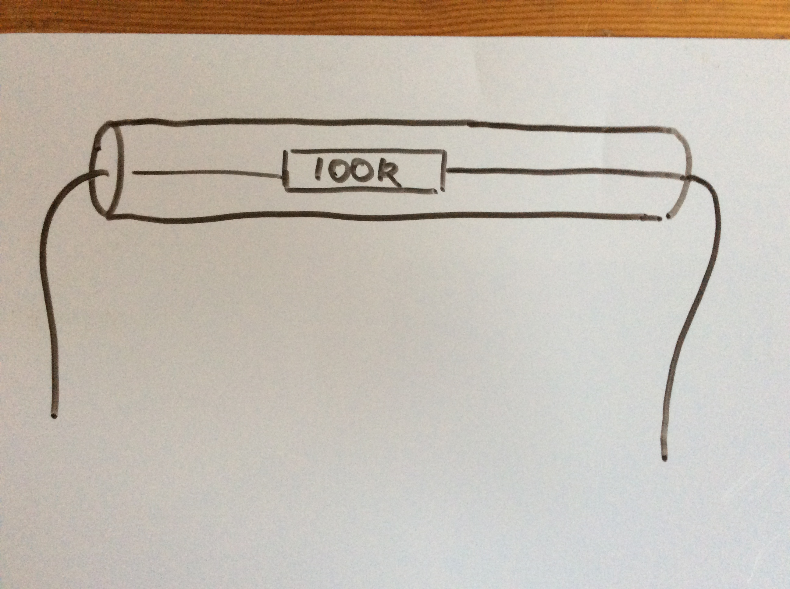
- But we can place a third contact point midway along the wire. This now divides it up into two resistors.
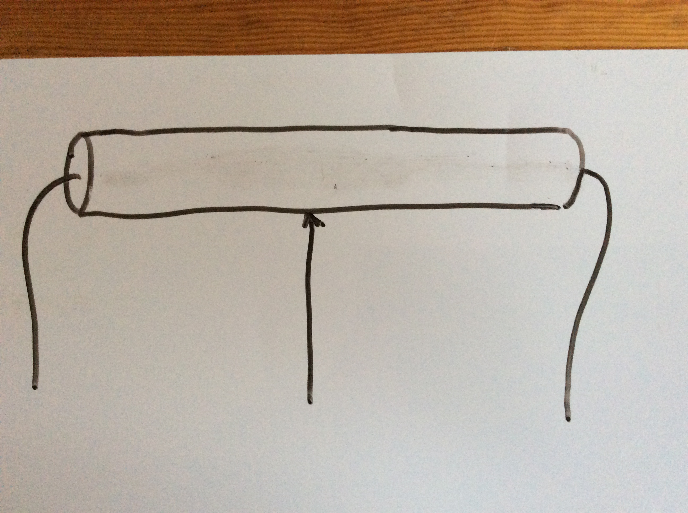
- This then makes it the equivalent to two resistors.
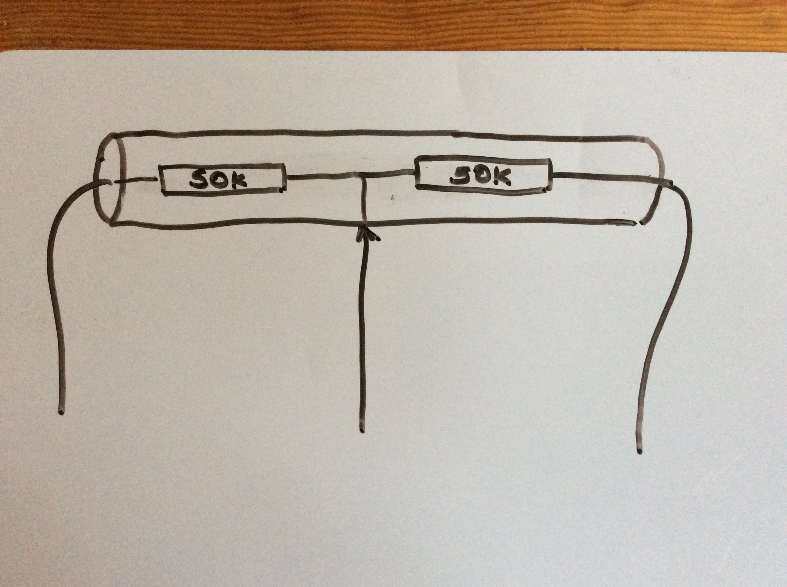
- Now we can vary the size of the two resistors by moving the third contact point up and down the wire.
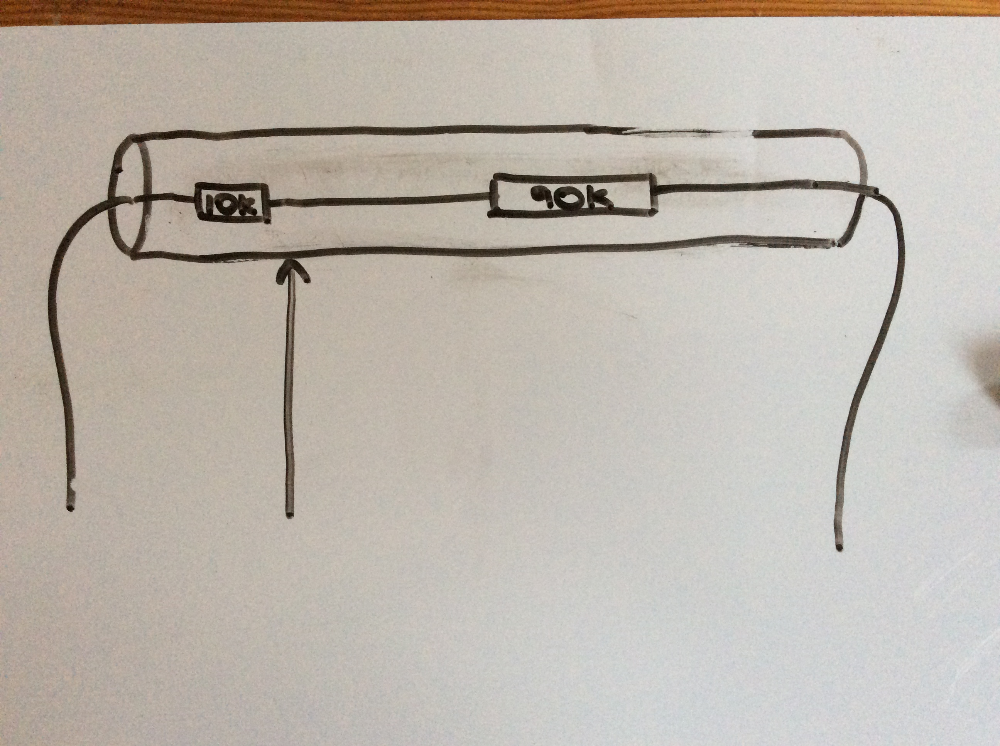
- This is how a potentiometer works. A coil of wire is used and the third contact point is normally moved by rotating a dial.

Build It
- Let's place a potentiometer into our circuit.
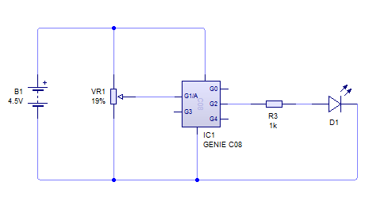
- Simulate the circuit and adjust the potentiometer to see how it effects the LED.
Badge It - Platinum
- Create a circuit with a GENIE CO8 with three outputs that connect to LEDs.
- An analogue input should connect to a potentiometer.
- Now write a program that sets the number of LEDs that are on is determined by the potentiometer.